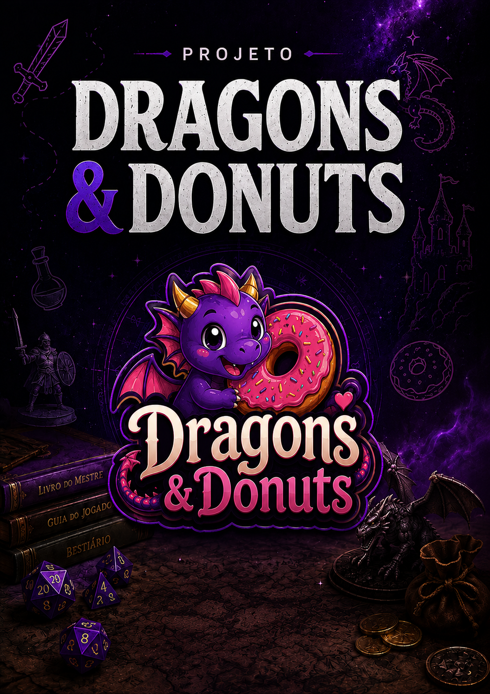
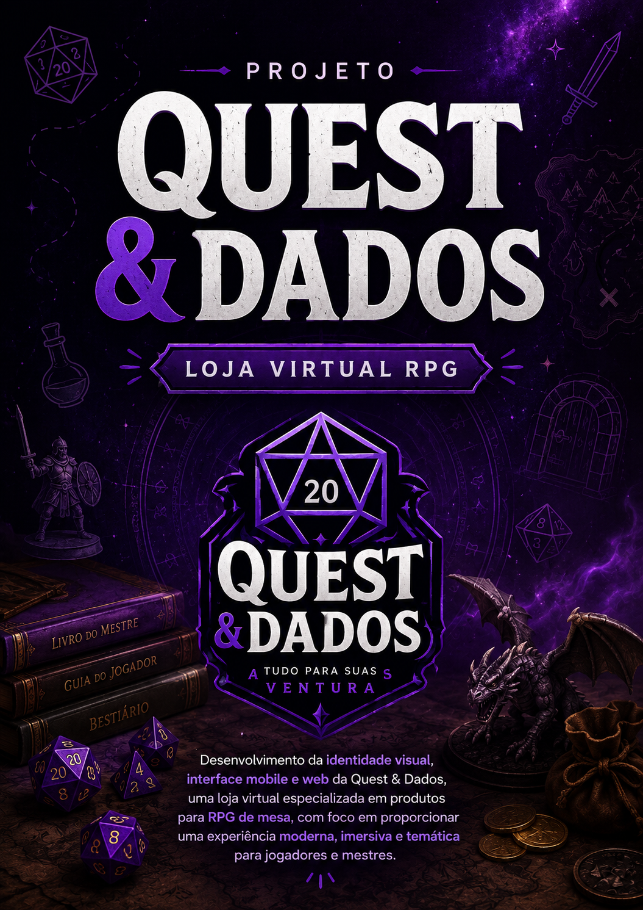
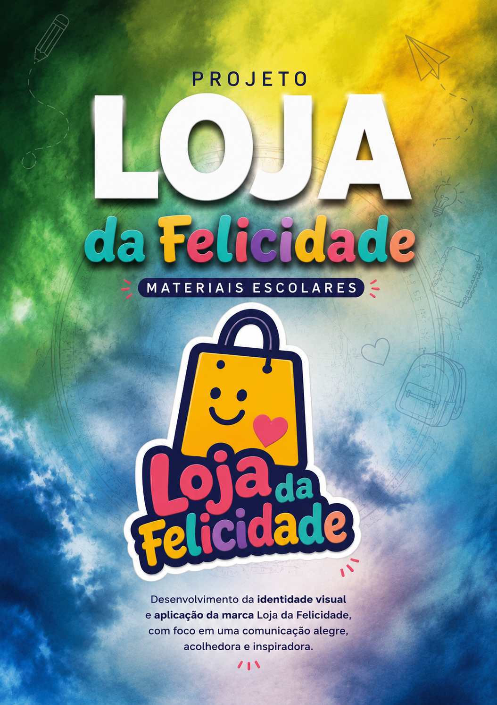

A Quest & Dados é uma loja virtual especializada em produtos para RPG de mesa. Ela foi criada para oferecer praticidade aos jogadores, reunindo dados, livros, miniaturas e acessórios em um único lugar. Sua identidade visual é inspirada no universo da fantasia e seu principal objetivo é proporcionar uma experiência de compra moderna e temática para a comunidade RPG.

A Loja da Felicidade é uma loja especializada em materiais escolares e produtos para papelaria. Ela foi criada para oferecer praticidade, qualidade e variedade aos estudantes, reunindo cadernos, mochilas, estojos, agendas e diversos itens escolares em um único lugar. Sua identidade visual é colorida e alegre, inspirada na criatividade e no universo da educação, e seu principal objetivo é proporcionar uma experiência de compra acolhedora, divertida e acessível para alunos, pais e professores.